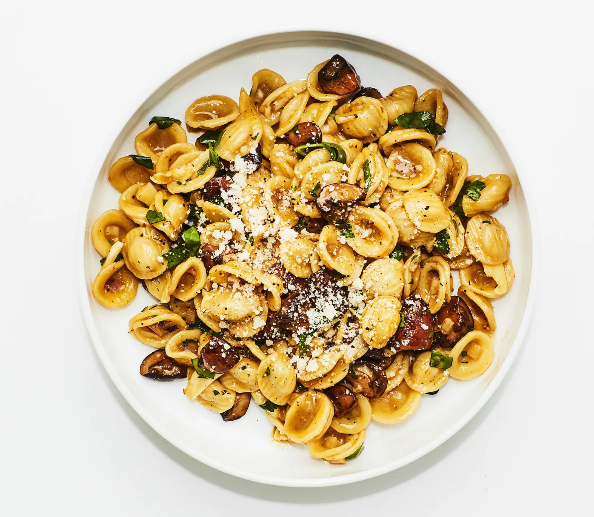

Mushroom Carbonara

Ingredients
- Kosher salt
- 1.5 pounds crimini or button mushrooms
- 6 garlic cloves
- 2 medium shallots
- 1 cup parsley
- 5 large egg yolks
- 1 large egg
- 4 oz grated parmesan
- 1.5 teaspoon ground black pepper
- .25 cup EVOO
- 1 pound orecchiette
Steps
- Boil salty water
- discard mushroom stems, quarter mushrooms
- slice garlic, dice shallots, chop parsley
- whisk egg yolks, large egg, parmesan, and pepper
- med-high, saute mushrooms in EVOO, toss every 5 minutes for 15 minutes, mushroom should be golden brown
- boil pasta, 2 min shy of al dente
- reduce heat to med-low, add garlic, shallots, and salt< (1 min)/li>
- save 2 cups of pasta water
- add pasta and 1 cup of pasta water to mushroom mixture, cook about 2 min, remove from heat
- slowly add .5 cup of pasta water to egg mixture and whisk to combine
- add egg mix to pasta, mix
- add parsley and stir
- top with parmesan and pepper